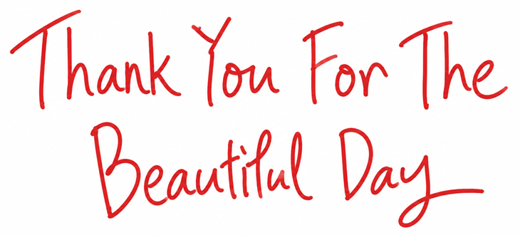

Shop
A little favorite for your everyday.
Visit our shop
Find the beautiful in the everyday.
Take a little scrollThat’s why we have to say what we feel while we still feel it.
And it is just as important to notice what we are feeling in the first place.
Even a city we have grown used to can become something special when we change our perspective, or visit it with someone we care about.
The city can feel special.
So can the day.
On a day when we meet someone wonderful, or when something good happens,
there are certain words we find ourselves wanting to say out loud.
Thank you for the beautiful day.
Thank You For The Beautiful Day.
言葉には賞味期限があって、
思っているうちに口にすること、また、自分が思っていることに気づくことも大事です。
見慣れた街でつまらないと思っていても、違う視点から見たり、好きな人と訪れたりすれば、それは特別な場所になったりします。
その一日も、特別になります。
いい人と出会えたり、いい物事が起きたりした日には、口にしたいフレーズなのです。
A little favorite for your everyday.
Visit our shopLittle moments from everyday life.
@thankyouforthebeautifuldayA little thank you, from us to you.